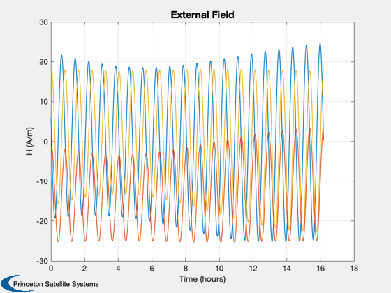
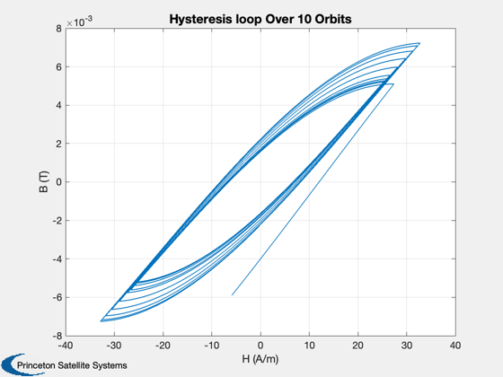
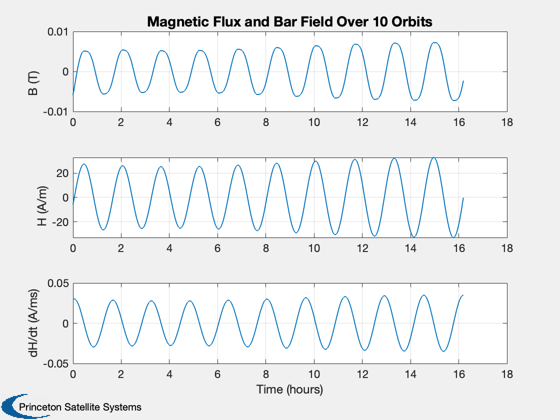
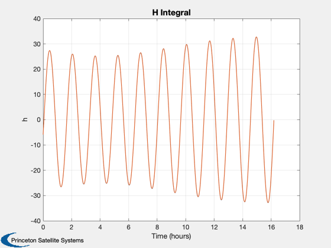
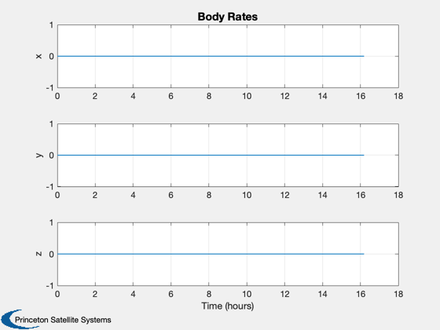

Magnetic hysteresis over multiple orbits.
Shows the magnetic field in a magnetic hysteresis damper over multiple orbits. The goal is to verify that appropriate hysteresis curves are seen in the computed bar flux. Without external torque, there will be one hysteresis loop per orbit.
When using the hysteresis function you must be very careful to have the field rate in the body frame. Otherwise the magnet can go past saturation. In addition, use BFromHHysteresis to set the initial value for the b field in the bar.
Things to try:
1. Try different bar orientations in the body frame 2. Different orbits and initial rates 3. Try different numbers of points per orbit. 4. Add a nonzero torque
See also BFromHHysteresis, MagneticHysteresis, BDipole, RVFromKepler, FRB, RK4 ----------------------------------------------------------------------
Contents
%-------------------------------------------------------------------------- % Copyright (c) 2014 Princeton Satellite Systems, Inc. % All Rights Reserved %-------------------------------------------------------------------------- % Since version 2014.1 %--------------------------------------------------------------------------
Rod parameters - typical small satellite damper in the literature
%--------------- d.Br = 0.004; % Remanence (T) d.Bs = 0.025; % Saturation flux density (T) d.Hc = 12; % Coercive force (A/m) uBody = [0;0;1]; % Rod orientation in the body frame
Generate the orbit
%-------------------- nOrbit = 10; % Number of orbits n = 2000*nOrbit; % Number of time steps el = [7000 55*pi/180 0 0 0 0]; p = Period(7000); t = linspace(0,nOrbit*p,n); [r,v] = RVFromKepler(el,t);
Initialize the attitude
%------------------------- qLVLH = QLVLH(r,v); qBody = qLVLH(:,1); % [1;0;0;0] omega = [0;-OrbRate(7000);0]; % 0.001*randn(3,1); % [0;0;0]; % torque = 0e-7*[1;1;1];
Julian date
%-------------
jD = JD2000 + t/86400;
Magnetic field and derivative
%-------------------------------
[b,bDot] = BDipole(r,jD,v);
mu0 = 4e-7*pi;
h = b /mu0;
hDot = bDot/mu0;
u = QTForm( qBody, uBody );
hMag = Dot(u, h(:,1));
hDotMag = Dot(u,hDot(:,1));
bBar = BFromHHysteresis( hMag, hDotMag, d );
Simulation
%------------ n = length(t); xP = zeros(3,n); qP = zeros(7,n); dT = t(2) - t(1); % Integrate hDotMag to verify hysteresis model is working correctly hInt = hMag; TimeDisplay( 'initialize', 'Magnetic Hysteresis', n ); for k = 1:n u = QTForm( qBody, uBody ); c = Q2Mat( qBody ); hDotBody = c*(hDot(:,k) - Skew(c'*omega)*h(:,k)); hMag = Dot(u, h(:,k)); hDotMag = Dot(uBody,hDotBody); xP(:,k) = [bBar;hMag;hDotMag]; qP(:,k) = [qBody;omega]; x = RK4( @FRB, [qBody;omega], dT, t(k), eye(3), eye(3), torque ); qBody = x(1:4); omega = x(5:7); bBar = RK4( @MagneticHysteresis, bBar, dT, 0, hMag, hDotMag, d ); hInt(k+1) = hInt(k) + hDotMag*dT; TimeDisplay( 'update' ); end TimeDisplay( 'close' );
Plots
%------- [t,tL] = TimeLabl(t); if( nOrbit > 1 ) f = 's'; else f = ''; end Plot2D(t,h,tL,'H (A/m)','External Field') s = sprintf('Hysteresis loop Over %d Orbit%s',nOrbit,f); Plot2D(xP(2,:),xP(1,:),'H (A/m)','B (T)',s) s = sprintf('Magnetic Flux and Bar Field Over %d Orbit%s',nOrbit,f); Plot2D(t,xP,tL,{'B (T)' 'H (A/m)' 'dH/dt (A/ms)'},s) Plot2D(t,[xP(2,:);hInt(1:end-1)],tL,{'h'},'H Integral') Plot2D(t,qP(5:7,:),tL,{'x','y','z'},'Body Rates') %-------------------------------------- % $Date$ % $Id: fbdc192cc77515fadd6fb6adffd877686db897a0 $    